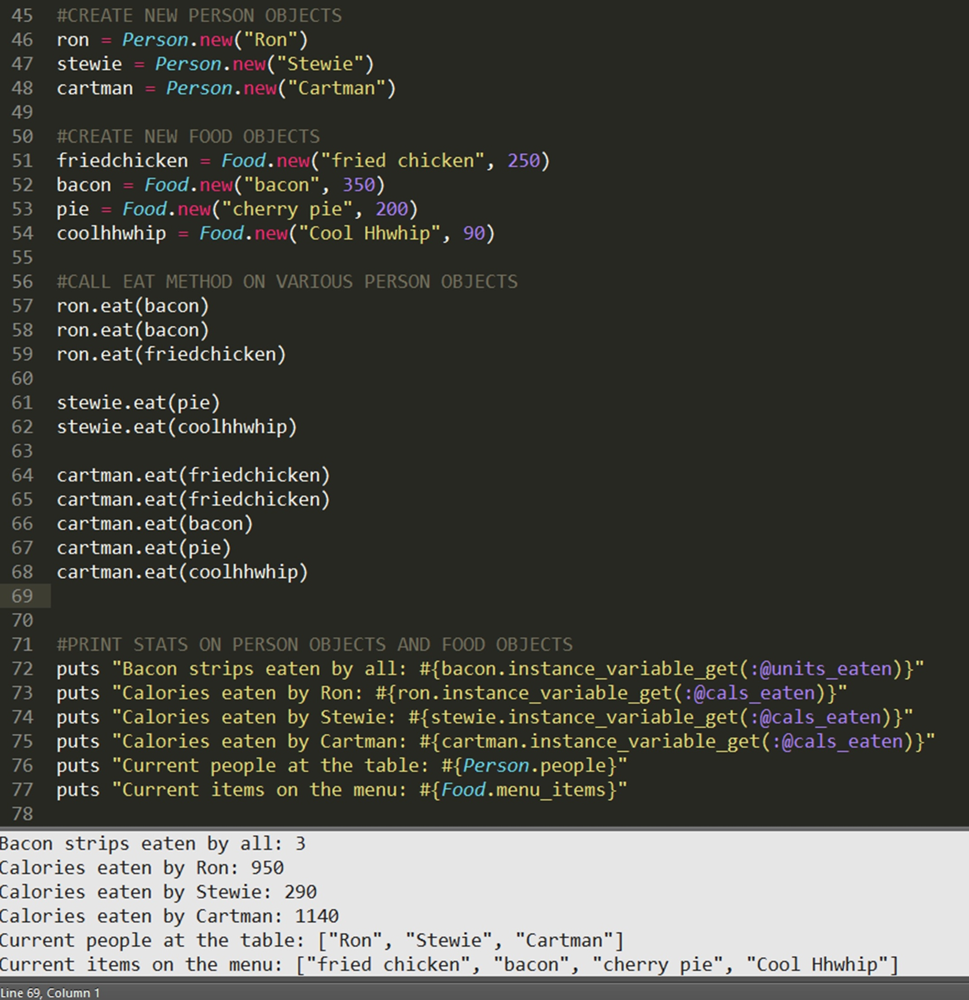
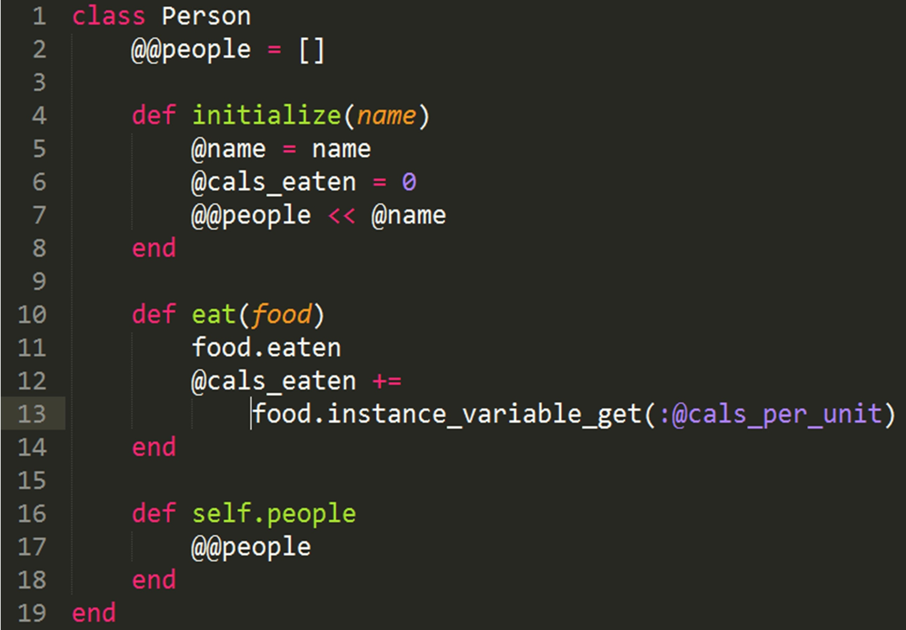
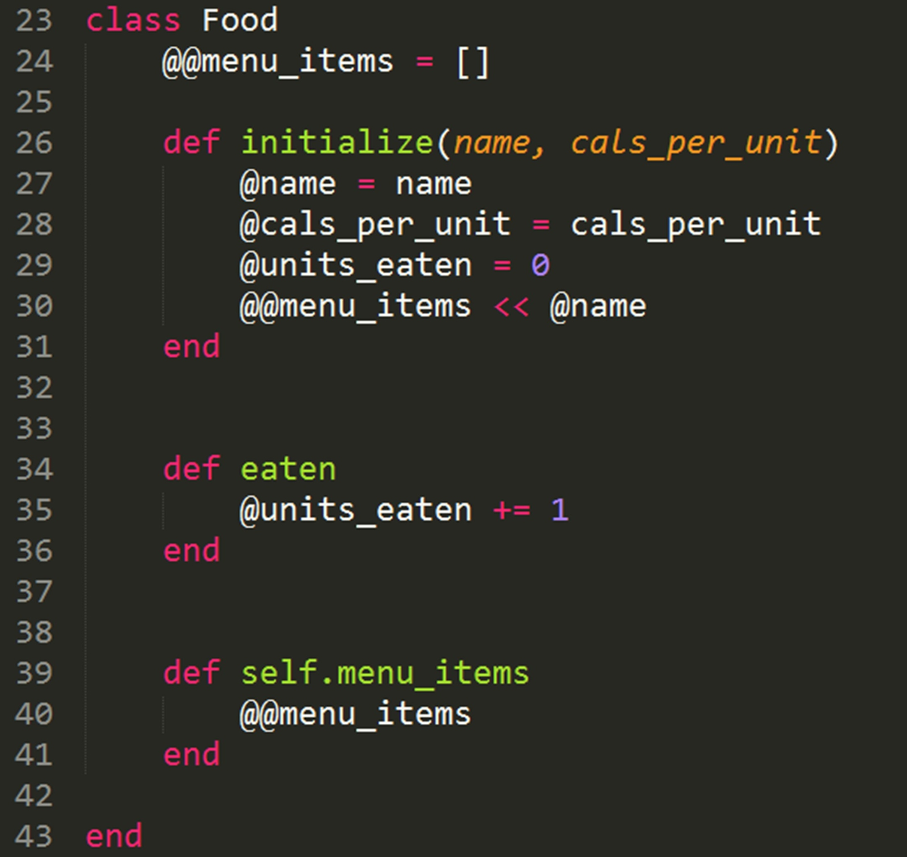

Classes, Objects, and Methods
For demonstrating the concepts of classes, objects, and instances, I have chosen to stick with a recurring theme in my Dev Bootcamp assignments: TV characters and food. This program that I have created allows the user to create Person objects and Food objects. Users can call the eat(food) method to make a Person eat a certain food. This method will keep track of how many calories that Person has consumed. In addition, the Food class tracks the number of units of a particular food item that a Person has eaten.
Before I continue, if you would like to see the actual Ruby file with code that can be run from your terminal or with ctrl + B in Sublime, go to this link on GitHub and copy and paste the text into a new Ruby file.
The code above shows a sample of what methods the user can call. In lines 46-48, we create 3 new Person objects: ron, stewie, and cartman. We then create a few food objects. The first parameter is the string name of the food object; the second is an integer representing the number of calories that we choose to assign to that particular food object.
We then call the eat method on any of our Person objects that we have created, passing in any of the food objects we have created. For example, whenever we call ron.eat(bacon), this adds 350 calories to ron's cals_eaten instance variable because we assigned 350 as the amount of calories for the bacon object. Thus if we call ron.eat(bacon) twice, his cals_eaten instance variable will be at 700.
Let's take a look at the code that actually allows the user to create Person and Food objects:
To create a Person, the initialize method accepts a name variable (a string to represent the Person's name). The instance variable cals_eaten is set to 0 initally, because we assume that no person has eaten any food yet.
The @@people variable is a class variable, not an instance variable. In line 2, we see that it is created as an array. In line 7, the @name variable (for example, "Ron"), is added to the people array. This means that for each Person object we create, that Person's name will be added to the array. This way, we can see how many Person objects we have created by calling Person.people, which simple returns the class variable people (lines 16-18).
To understand the eat method in lines 10-14, we have to take a look at the code for the Food class:
When we call eat(food) from the Person class (line 10), we are calling that method on a Person object, but passing in a Food object (such as bacon, pie, friedchicken) as a parameter. In line 11, calling food.eaten applies to a particular food object. We see in line 34 the eaten method from the Food class. This method simply increases the units_eaten of that food by 1. This means that whether we call ron.eats(bacon), stewie.eats(bacon), or cartman.eats(bacon), the bacon object's instance variable @units_eaten will always increase by 1. This way, we can see how much bacon has been eaten by all of our Person objects, not just by one at a time.
In lines 12-13 of the eat method within the Person class, we also increase the @cals_eaten instance variable for a given Person. In line 13 we are able to reference the @cals_per_unit instance variable for a given Food by calling food.instance_variable_get(:@cals_per_unit). This method allows us to access an instance variable from a different class altogether!
Finally, we can looks at a few more things in the Food class. As we saw with the Person class, the double @@ denotes a class variable. Line 24 creates the class variable @@menu_items as an array. As we create new food objects, they will be added to this array. To view a list of the current items on the menu, we can just call puts Food.menu_items.
The initialize method for the Food class takes two parameters, a string name for the food and an integer cals_per_unit. These are instance variables, denoted by the single @ sign. We also initialize the @units_eaten instance variable to 0, as we assume that none of that Food Object has been eaten right upon initialization. The units_eaten variable will increase once the eat(food) method has been called.
This is a very simple example of objects, classes, and the difference between instance and class variables. A simple way to think to of the organization of classes and methods is that an object (which is an instance of a class) is like a noun, and a method is like a verb. You can define what common characteristics all instances of a class should have by creating different methods. Different classes can access information within one another through the use of class and instance variables.
It might be a little confusing at first as to why it is necessary to compartmentalize objects this way. But the more you code, the more you see its value, particularly as it gets much more complicated than this example. But if you take away one thing from this blog entry, remember only this: You can't have pie without coolhhwhip!!!